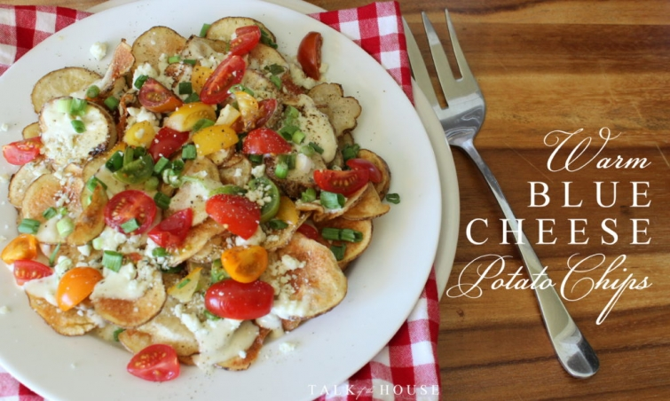
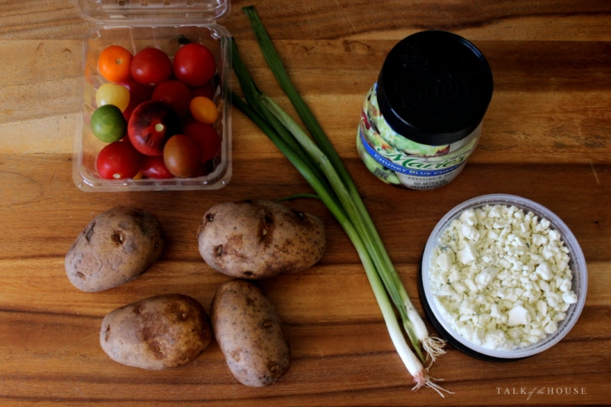
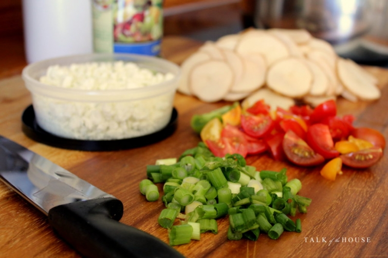

.png)
.PNG)
.PNG)
.PNG)
.PNG)
.PNG)
.JPG)
.JPG)
.PNG)
.PNG)



You are going to hate me for telling you about these. I know, because once you have a taste of these blue cheese potato chips, you will be addicted. Truly. We always order them as an appetizer at Daphne Lodge near Lake Blackshear, Georgia, and our family fights over who gets the most when they place them on our table.
The last time we were there, I really studied them and decided they would not be difficult to make at home, and they will make a great appetizer for a party (or just a snack anytime you crave them – and you will crave them. 🙂 )
Here are the ingredients you will need:
Small grape tomatoes (I used a package of heirlooms just to give the dish some color variation)
2 green onions
Marie’s Chunky Blue Cheese Dressing (do not use another brand unless it is home-made!)
4 medium to large potatoes
Blue Cheese crumbles
vegetable oil

Slice your potatoes really thin. (Remember you are making potato chips.) Chop the green onions, and cut up the grape tomatoes. (I believe Daphne’s version has a lot more chopped green onions than I used.)
Fry the potatoes in the vegetable oil over medium to high heat until crisp.
 When brown, remove them from the oil with a slotted spoon, and allow them to drain on paper towels. Salt and pepper them immediately. (I know it is tempting to eat them at this point, but don’t. They are about to get even better! 🙂 )
When brown, remove them from the oil with a slotted spoon, and allow them to drain on paper towels. Salt and pepper them immediately. (I know it is tempting to eat them at this point, but don’t. They are about to get even better! 🙂 )
Preheat your oven to 350 degrees. Now comes the fun part. Cover an oven-safe plate with a layer of chips. Drizzle some of the blue cheese dressing over them. Sprinkle some of the blue cheese crumbles on top of that. I am not giving you exact measurements because it all depends on how much a fan of blue cheese you are. I say the more the better. Our daughter says not so much (but she does love these chips.) Then sprinkle about half of the green onions and half of the tomatoes on top. Salt and pepper this layer (for the tomato’s sake.)
Then do it all over again with another layer.
Put the plate in the oven for 10 minutes. Carefully remove it after 10 minutes and dig in! When they serve it at Daphne Lodge, they take the hot plate and put it on top of another plate (and warn you not to burn your hands on it when you fight over the chips. 🙂 )
This dish is technically an appetizer, but it also works very well as a side dish for chicken or a steak hot off the grill. Just add a few ears of hot buttered corn on the cob, and it doesn’t get any better! Well…maybe better with one change. When the summer tomatoes become available, I will chop them to use in place of the small grape tomatoes. (You just can’t beat the flavor of a fresh-from-the-garden summer tomato!) With warm summer evenings about to be upon us, I believe these chips are going to be a frequent dish on our table.
Enjoy!
Until next time…


.PNG)
Wow…this looks delish! I’m not a huge fan of blue cheese, but I’ll bet these are really good!
OH YOU HAVE GOT TO BE KIDDING ME… I’m going to make this for our next party…even with bathing suit season here. YUM.
Love,love blue cheese and these look amazing!!
Thanks for the suggestion! I wonder if you could make it with some good quality “store-bought” chips?
I don’t think I would ever order this, but I trust you Kelly!! 😉 😀 It certainly looks delish!
Thanks Kelly …I can tell just how delicious and “moreish” this is going to be. I can see why you’d fight over it! :). It’s come at just the right time too. I always thought I wouldn’t like blue cheese, then my daughter introduced me to a smoked one and it turns out I love it!! Definitely going to make this 🙂
Hope you’re having a good week. Dull, wet and windy here … where’s Summer gone!?
Rosemary
Oh my goodness! We are going to have to go off our diet. We love blue cheese dressing and I make a fresh batch every two weeks. Can’t wait to try these!
These look delicious! Thanks, Kelly
Hate? Never! Maybe love your blog even more!! Thank you for this new recipe. My mouth is watering! Can’t wait to try it! But did you have to mention the fresh from the garden tomato? Something else I am impatiently waiting for. This was such a nice surprise. 😊
Oh yes!!! This looks delicious!!! Blue cheese and tomatoes two of my favorite things!!!! Can’t wait to make with a grilled steak.
Yum! I’m grocery shopping tomorrow and am definitely picking up these ingredients. Thanks for sharing!
Oh my!!! That’s my kind of dish! Thank you! 😉
Oh, these look dangerous! I’ll be pinning this for sure!
I had to laugh out loud when you mentioned corn on the cob…we had a family gathering this weekend, and hubs had discussed the menu with daughter. It was decided we would have corn on the cob, so hubs bought 15 ears. Turns out, daughter did too! Apparently there was a miss communication there. So we were joking about corn all weekend, telling folks they had to take corn if they wanted to leave, that we were having corn for dessert, etc. So your mention of corn got me laughing all over again! On top of that, hubs’ brother showed up with about 10 lbs. worth of various steaks from his freezer, when we already had more than enough meat planned! Gotta love helpful family, right?
Oooh! These look delicious! I was reading the recipe out to my husband. We can’t wait to try them. Thanks so much for posting!